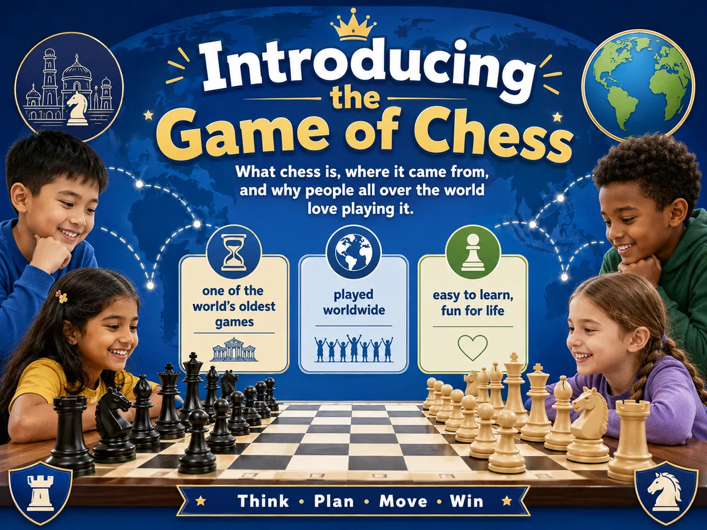
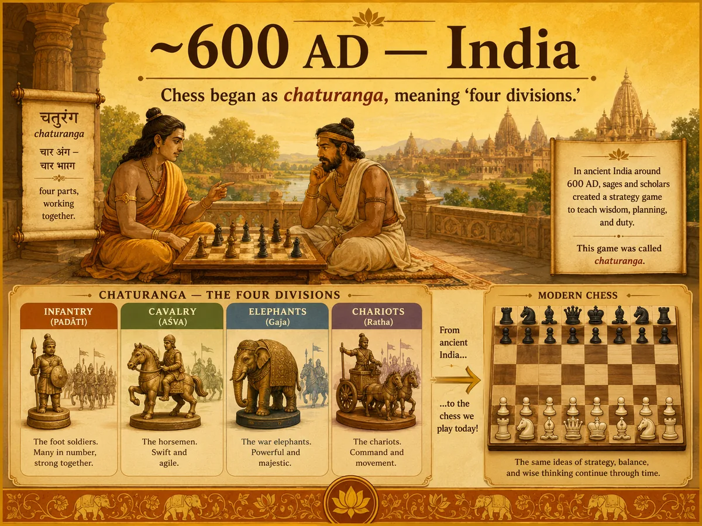
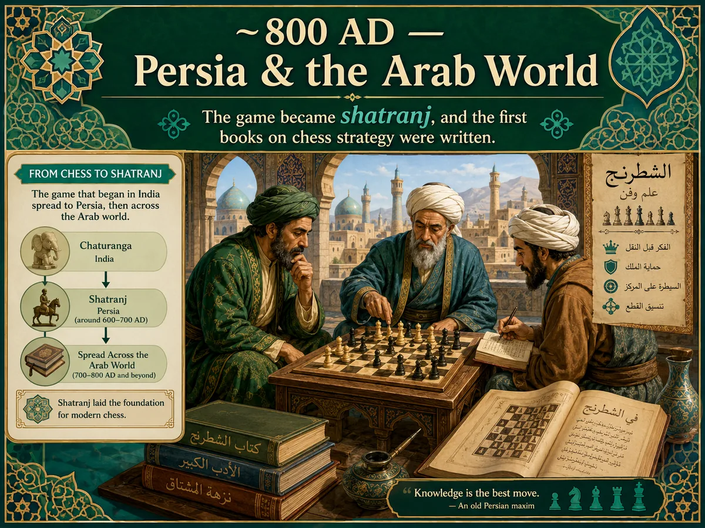
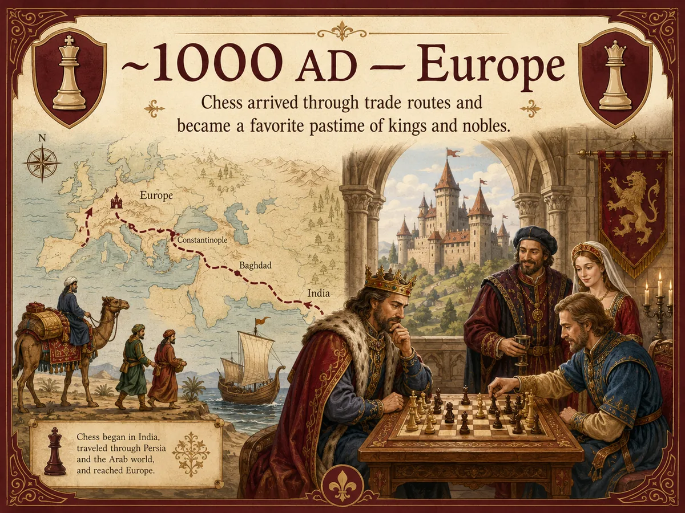
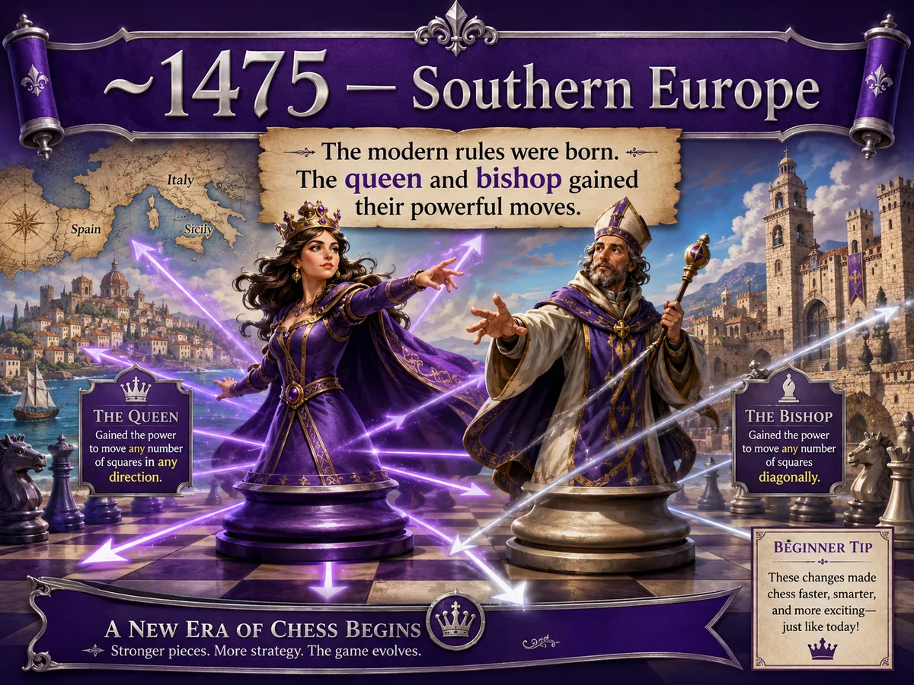
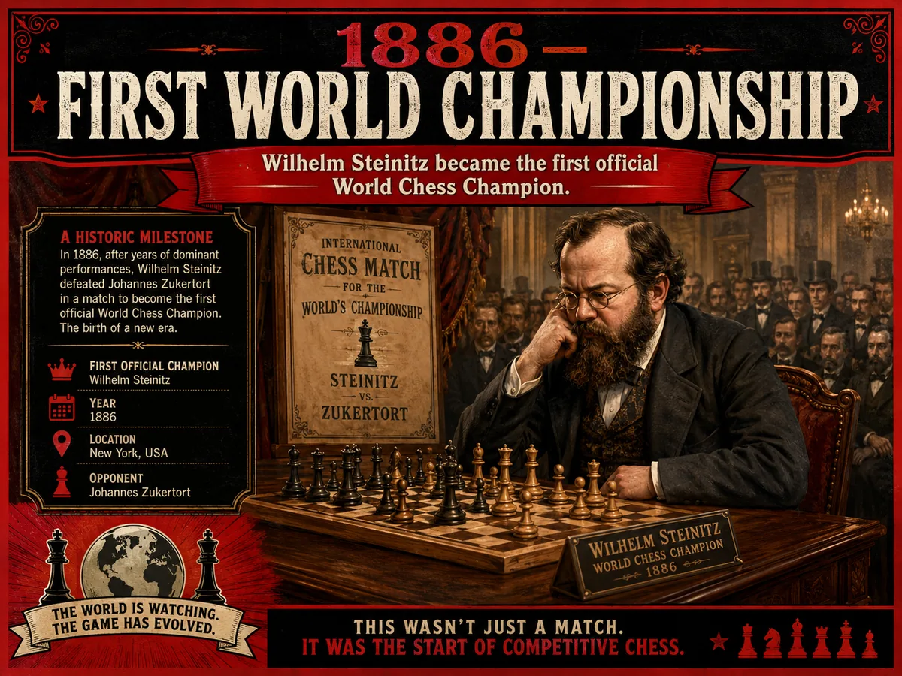
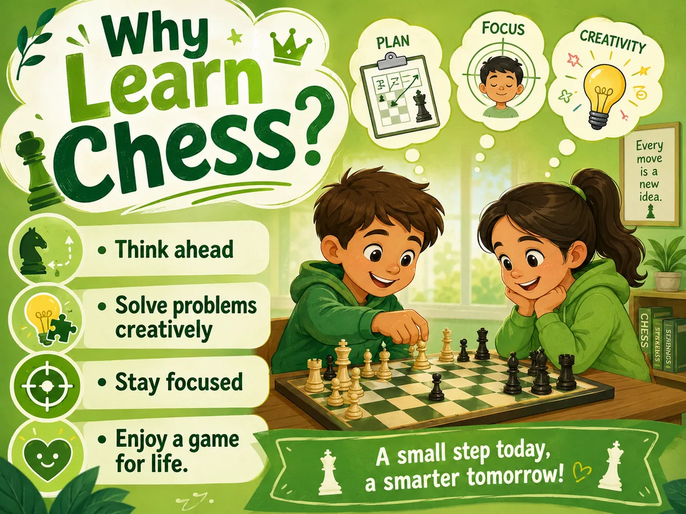
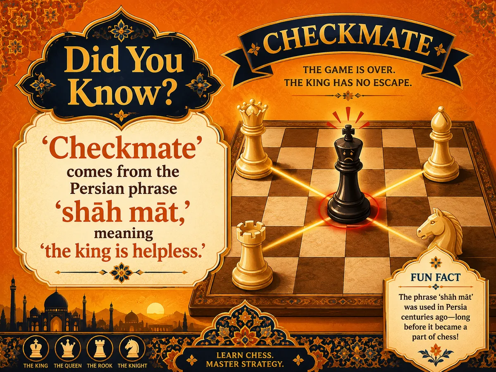
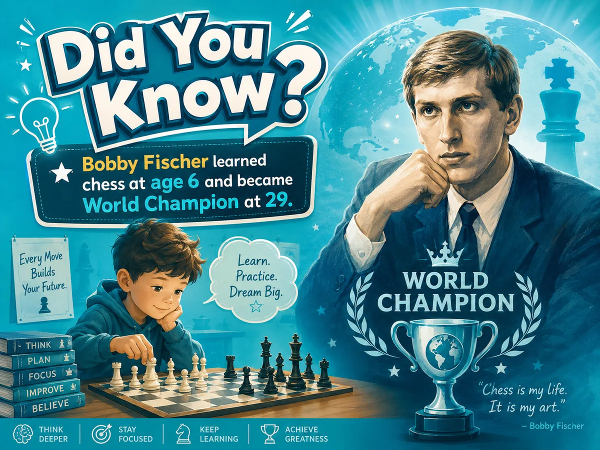
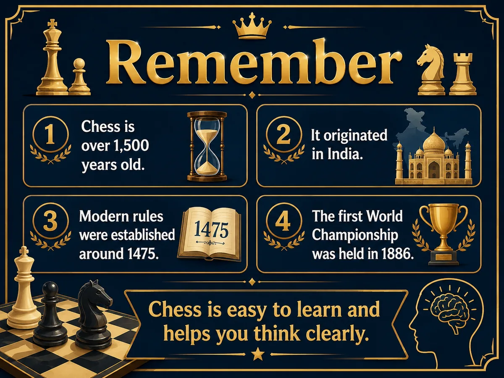

~600 AD
India
Chess began as chaturanga, meaning “four divisions.”
Lesson 1 · Beginner / Pawn Level
What chess is, where it came from, and why people all over the world love playing it.

Chess is one of the oldest games in the world. It has been played for centuries and is still popular today. Millions of people play chess online and in tournaments across the globe.
Chess traveled across continents and centuries before becoming the game we know today.
Chess began as chaturanga, meaning “four divisions.”
The game became shatranj, and scholars wrote early strategy books.
Chess arrived through trade routes and became popular with kings and nobles.
The modern rules were born. The queen and bishop became powerful pieces.
Wilhelm Steinitz became the first official World Chess Champion.
Chess began as a game called chaturanga, meaning “four divisions” — infantry, cavalry, elephants, and chariots.

The game spread to Persia, where it became shatranj. Arabic scholars wrote the first books about chess strategy.

Chess arrived through trade routes and quickly became a favorite pastime of kings and nobles.

The rules we use today were born here. The queen and bishop gained their powerful modern moves.

Wilhelm Steinitz became the first official World Chess Champion, launching the competitive era of chess.

Chess has become a symbol of intelligence and strategic thinking. But it is not just for geniuses — it is easy to learn and fun to play at every level.

Two quick facts help show the long history and inspiring power of chess.

The word “checkmate” comes from the Persian phrase shāh māt, meaning “the king is helpless.”

Bobby Fischer, one of the greatest players ever, learned chess at age 6 and became World Champion at just 29.
These are the key points from the lesson.

Use these quick questions at the end of the lesson.
Chess originated in India as a game called chaturanga.
It means “four divisions”: infantry, cavalry, elephants, and chariots.
The modern rules developed in Southern Europe, and the queen and bishop gained their powerful moves.
It comes from the Persian phrase shāh māt, meaning “the king is helpless.”
It helps you plan, solve problems, concentrate, and enjoy a lifelong game.